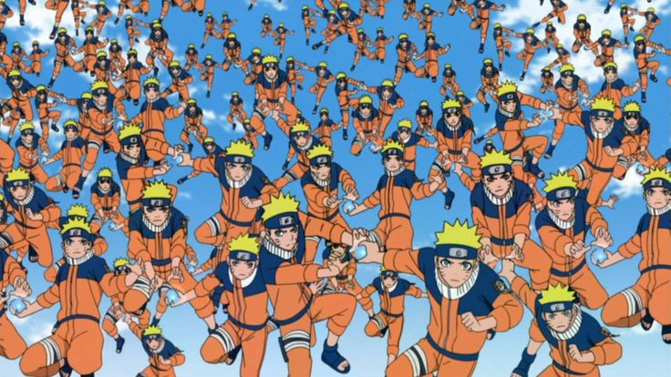
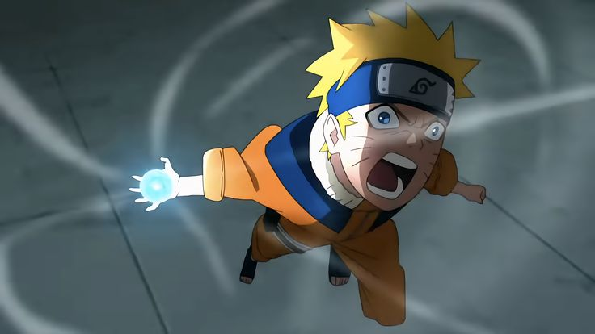
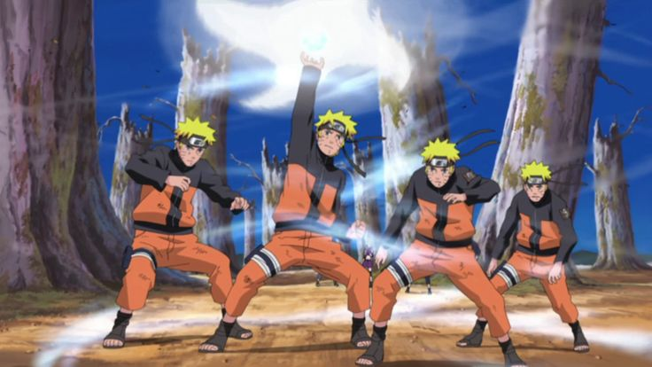
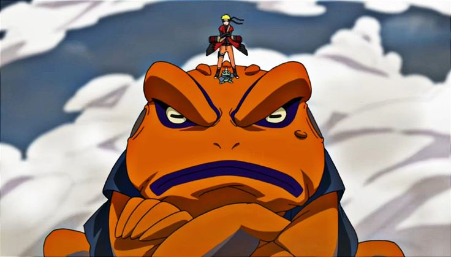
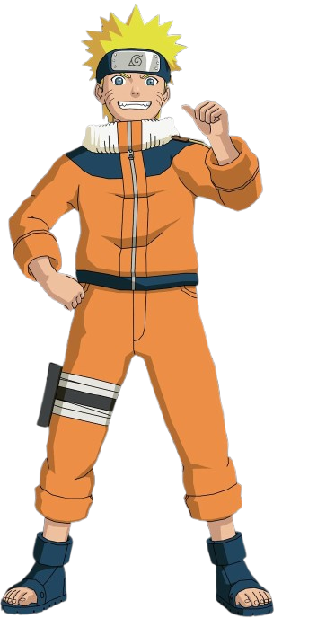
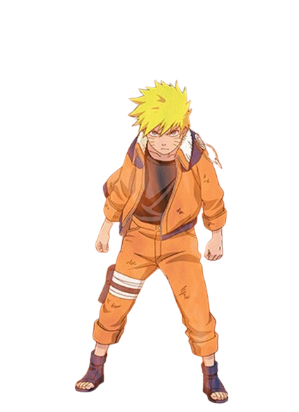
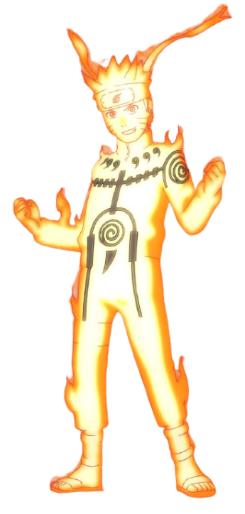
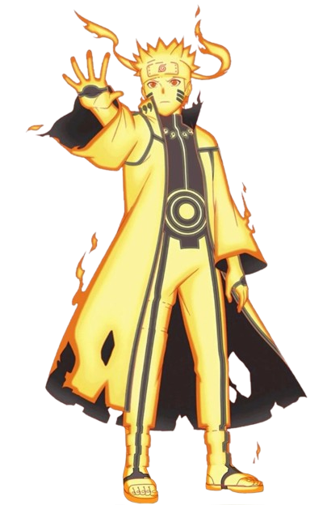
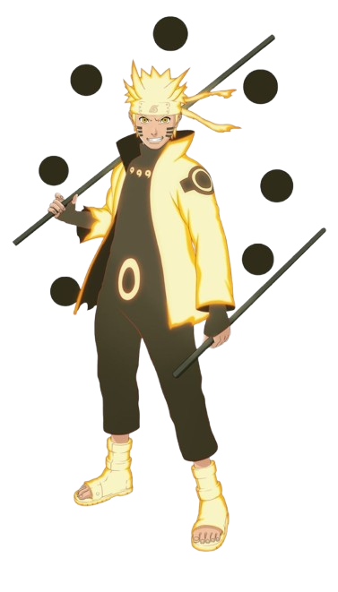
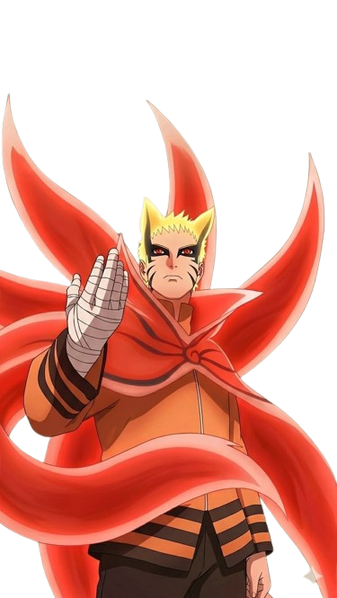

NARUTO'S SIGNATURE JUTSU

Shadow Clone Jutsu

Rasengan

Rasenshuriken

Tailed Beast Ball

Frog Kumite


Naruto’s normal form

Naruto draws on Kurama’s chakra, gaining immense power and a fierce red chakra aura.

By gathering natural energy, Naruto gains enhanced sensory abilities, strength, and powerful attacks.

Naruto surrounds himself with golden chakra, gaining incredible speed, strength, and chakra control.

A remarkable power-up that grants Naruto extraordinary abilities and lets him face some of the strongest enemies.

Naruto’s dangerous last-resort form, created by consuming Naruto and Kurama’s chakra in a new way, granting tremendous power at a severe cost.
His mentor and the leader who guides him.
His beloved mentor who trained him and inspired him.
Naruto’s rival and closest friend, whom he never gives up on.
His loyal friend and trusted advisor.
His teammate and a trusted friend from Team 7
The first teacher who truly accepted and cared for him.
A close friend who understands Naruto’s loneliness and struggles.
His loving wife, who always believes in him.
The Nine-Tailed Fox who eventually becomes Naruto’s powerful partner and friend.
Naruto Uzumaki, Sasuke Uchiha, Sakura Haruno, and their sensei Kakashi Hatake.
Rock Lee, Neji Hyuga, and Tenten train under Might Guy.
Shikamaru Nara, Ino Yamanaka, and Choji Akimichi guided by Asuma Sarutobi.
Hinata Hyuga, Kiba Inuzuka with Akamaru, and Shino Aburame work under Kurenai Yuhi.




Discover the stories behind your favourite Naruto characters.